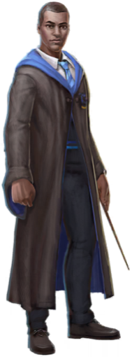
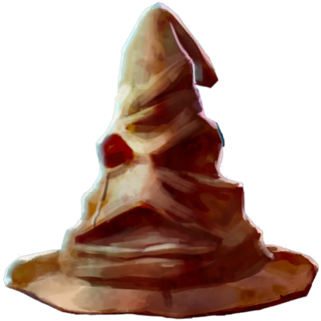

Page 1: DADA Classroom
Boggart Cabinet
A Boggart is an amorphous shape-shifting creature that changes into whatever the viewer's worst fear is. Wizards are encouraged to approach a Boggart in a group, as the Boggart will be unable to focus on a single victim.
To return to:Hogwarts Defence Against the Dark Arts Classroom, 1993
Gryffindor Student
Brave, chivalrous, and with nerves of steel, students from Gryffindor House share in the legacy of Harry Potter, Albus Dumbledore, and Remus Lupin. Griffindor has a fierce rivalry with Slytherin House.
To return to:Gryffindor Common Room

Slytherin Student
With ambitious, cunning, and resourceful students, Slytherin House has a legacy which includes Draco Malfoy, Severus Snape, and Tom Riddle. The spectacular Slytherin Common Room is located in the dungeons of Hogwarts, underneath the Black Lake.
To return to:Slytherin Common Room
Hufflepuff Student
Hufflepuff students embody patience, hard work, and loyalty. Cedric Diggory, Nymphadora Tonks, and Newt Scamander all famously graced Hufflepuff House. The Common Room can be accessed by tapping on a barrel by its entrance to the rhythm of “Helga Hufflepuff”.
To return to:Hufflepuff Common Room

Ravenclaw Student
Ravenclaws are clever, creative, and competitive students. Entrance to the Ravenclaw Common Room requires that students answer a riddle. Luna Lovegood, Gilderoy Lockhart, and Garrick Ollivander were all Ravenclaw students.
To return to:Ravenclaw Common Room

Page 2: Moving Staircases
Minerva McGonagall
Minerva McGonagall is a professor of Transfiguration and head of Gryffindor house at Hogwarts School of Witchcraf and Wizardry.
To return to:Hogwarts Transfiguration Classroom
Moaning Myrtle
A former student of Hogwarts, Myrtle Warren was killed under mysterious circumstances in a Hogwarts girls' bathroom. She now haunts the same lavatory, often heard moaning and sobbing all the way down the hall.
To return to:Hogwarts Girls' Bathroom

Peeves
The resident poltergeist at Hogwarts - Peeves has haunted the castle since its very inception. Relentlessly mischievous, he shows little respect for students, but has shown affinity for student troublemakers like Fred and George Weasley.
To return to:Hogwarts Great Hall

Professor Flitwick
Filius Flitwick is the Professor of Charms and Head of Ravenclaw House at Hogwarts School of Witchcraft and Wizardry. Before embarking on his teaching career, Flitwick was a duelling champion.
To return to:Hogwarts Charms Classroom
Pomona Sprout
Pomona Sprout teaches Herbology at Hogwarts School of Witchcraft and Wizardry, and is Head of Hufflepuff House. Known for her cheerful demeanor, Professor Sprout helped brew the Mandrake Restorative Draught that healed students Petrified during attacks by Slytherin's Basilisk.
To return to:Hogwarts Greenhouse Three

Hogwarts House Cup
Every school year, the four Hogwarts Houses compete against one another to win the highly coveted House Cup, a prestigious honor awarded to the Hogwarts House that earns the most points throughout the year.
To return to:Hogwarts Trophy Room

Page 3: Great Hall
Portrait of Albus Dumbledore
One of the greatest wizards of all time, former Headmaster of Hogwarts Albus Dumbledore was known for - among many things - his alchemical work with Nicolas Flamel, the defeat of Gellert Grindelwald, and the 12 uses of dragon's blood.
To return to:Hogwarts Headmaster's Office

House Hour Glasses
The Hogwarts Hourglasses count House points, using precious stones to represent each House: rubies for Gryffindor, diamonds for Hufflepuff, sapphires for Ravenclaw, and emeralds for Slytherin. Points are awarded based on student performance, behaviour, and excellence throughout the year.
To return to:Hogwarts Great Hall

Fawkes
Fawkes the phoenix played a key role in helping Harry Potter defeat Slytherin's Basilisk in the Chamber of Secrets. Fawkes was a long time companion of Albus Dumbledore's - mysteriously disappearing after Dumbledore's death.
To return to:Albus Dumbledore

Sorting Hat
Originally owned by Godric Gryffindor, the Sorting Hat was enchanted by the four founders of Hogwarts to evaluate and properly sort first-year students into one of the four school houses: Gryffindor, Hufflepuff, Ravenclaw, or Slytherin.
To return to:Hogwarts Headmaster's Office

Owl Lecturn
From behind this ancient owl lecturn, the headmaster or headmistress of Hogwarts School of Witchcraft and Wizardry presides over the Welcoming Feast. This feast welcomes both new and returning students to the upcoming school year.
To return to:Hogwarts Great Hall